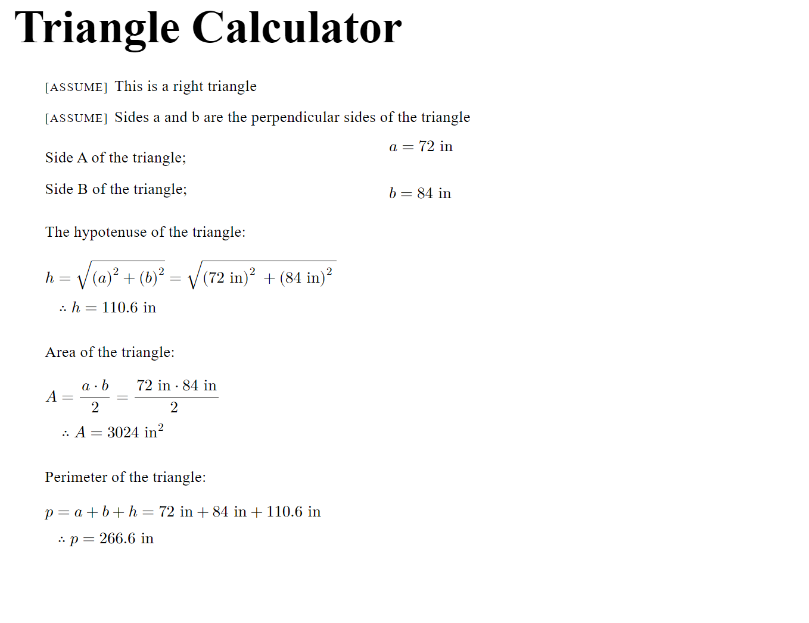

Getting Started - An introductory walk through
If this is your first time to the site then you’ve come to the right place!
This section will walk you through the application and point you to some helpful resources for learning more and becoming a master calculation builder.
Register as a user
The first step you can take is to create an account on the registration page. All you need is an email address and password.
Create a Template
Next you’ll need to create a new template file for building your first calculation.
Navigate to the Templates page and click on the green “+” button to add a new template.
A new form will pop up to create the template. We can just enter the name and description for your new template and then click “Submit” when it all looks good. For this example the template will be a triangle calculator.
Some simple code will automatically be placed in your template file for now, but in the next section we will customize it.
Writing a Custom Template
Now that our template is created and named, let’s customize it. A template defines the inputs, necesary steps, and results of a calculation. It’s like a recipe for calculations.
To enter the template content editor, we can click the the card for the template we just created.
This should take you to a new page that looks like this:
On the left is a text editor for writing the “recipe”, and on the right is a preview of what the calculation report will look like. There should be a very simple template here to get you started. We will make some changes now, but to see all of the available features and some more complex examples visit the Calculation Object Details and Example Calculation sections of the documentation.
Let’s start by clearing out the starter code. It’s important to note that you should always keep the utilities import at the top of the file and that your calculation should be within a function named calculation. Also note that templates are written in Python. If you are unsure about how use it there are some notes in the Using Python with Efficalc section and tons of free resources online to help.
The blank template will look like this:
1from efficalc import * 2 3 4def calculation():
Let’s edit our template to calculate the hypotenuse, area, and perimeter of a right triangle using inches as our unit of measurement. We can start with the title and some assumptions to make it clear what this template does:
Title("Triangle Calculator") Assumption("This is a right triangle") Assumption("Sides a and b are the perpendicular sides of the triangle")
To define the triangle, we can use the lengths of the two perpendicular sides. These will be the inputs:
a = Input("a", 1, "in", "Side A of the triangle") b = Input("b", 1, "in", "Side B of the triangle")
The hypotenuse will be used in calculating the perimeter so we will assign it to a variable, but the others will not be used; they can be defined without assigning to a variable (like assumption and title):
h = Calculation("h", sqrt(a**2 + b**2), "in", "The hypotenuse of the triangle", result_check=True) Calculation("A", a * b / 2, "in^2", "Area of the triangle", result_check=True) Calculation("p", a + b + h, "in", "Perimeter of the triangle", result_check=True)
Putting it all together gives us:
1from efficalc import * 2 3 4def calculation(): 5 6 Title("Triangle Calculator") 7 8 Assumption("This is a right triangle") 9 Assumption("Sides a and b are the perpendicular sides of the triangle") 10 11 a = Input("a", 1, "in", "Side A of the triangle") 12 b = Input("b", 1, "in", "Side B of the triangle") 13 14 15 h = Calculation("h", sqrt(a**2 + b**2), "in", "The hypotenuse of the triangle", result_check=True) 16 Calculation("A", a * b / 2, "in^2", "Area of the triangle", result_check=True) 17 Calculation("p", a + b + h, "in", "Perimeter of the triangle", result_check=True)
Before anything else, don’t forget to click “Save Changes”. You will see the template preview update to match this new code we just wrote. If there are any errors in the code, they will display in a red banner at the top of the page:
And now our template is ready to be used!
Create a Project
Next we will navigate to the “Projects” page where we can start creating projects and calculations. Calculations will always be organized within a project.
Creating a new project is just like creating a new template. Click on the green “+” to open the new project form, add the name and description for the project, and then click submit.
Create a Calculation
Now that we have a project and a template created, we can add our first calculation. Click on the green “+” button next to the “Calculations” title to open the new calculation form.
Enter a name and description for the calculation and also choose our template as the calculation’s template. In the future all of your templates will show up in the drop down menu.
Here you can create as many calculations as you need from your available templates. For example, if you create a template to design steel beams, you can create a new calculation for every beam you need to design.
For this example, we will create calculations for a big triangle and small triangle:
Using the Design Portal
Since we have everything created, let’s dig into the design portal where these templates and calculations work together for a seemless and efficient design workflow. Click on a calculation card to enter the design portal for that calculation:
The design portal will show the calculation instance separated into inputs and results. If you have calculations
which were not marked with result_check=True, they will not show up in this results check. This allows you to choose
which results you care most about during design and filters out the intermediate or less important calculations.
When a calculation is first created, the inputs will match the defaults you chose in the template. Since we chose to work on the small triangle first, we can change the inputs to match a small triangle’s dimensions, and refresh the results:
Note
Refreshing results will also save the current inputs for your calculation. Even if you log out or work on other calculations, this calculation will keep the latest inputs that you used as long as you refreshed the results with those inputs.
Since we also want to design a large triangle, we can navigate back to the Projects page, click on the large triangle calculation card, and update these inputs accordingly:

These two different calculations will share the same template but have independent inputs and results.
Warning
Calculations are always tied to the template, so if you change the template then all of the connected calculations will reflect that change.
Calculation Reports
Another helpful feature in the Design Portal are the automatic calculation reports. These reports can help in a number of ways:
They can help you understand how results are being calculated in the design process
They provide a clear and readable format to share the calculation for peer reviews or sharing the calculation
Your submittal workflow becomes a one-click process. When your project and calculations need to be submitted for review, the calculation report is already prepared.
There are two ways of viewing the calculation report:
The preview button
The “Open in new tab” button
The preview button will display the report in a pop up window over the design portal. This can be useful in the design process to dig deeper into how a result is being calculated.
The “Open in new tab” button will open just the calculation report in a new tab of your browser. This is the ideal setup for printing the report or for referencing the report in one tab while working on the design portal in another tab. If the inputs are updated, the calculation report tab can be refreshed to display updated calculations.
Next Steps
From here, the app is your oyster! Create any templates you can imagine and use them for every project that comes your way.
If want to dive deeper and learn more about using Efficalc, we have a number of helpful resources listed below. If at any point you want to contact us or give some feedback, we would love to hear from you. We can be contacted through the contact form on the site or by email at team@encompapp.com.
Here are some links to more detailed documentation:
A more advanced example: Example Calculation
Detailed descriptions of the calculation objects: Calculation Object Details
Some notes about using Python with efficalc: Using Python with Efficalc
The documentation home page: Learn about how to use Efficalc Cloud